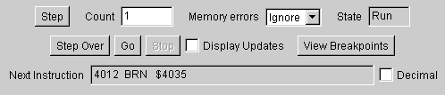
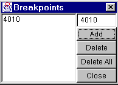

This section allows stepped or continuous execution of programs.
Causes a single or fixed number of instructions to be executed. The user interface is inactive during execution. If in Wait state, a single instruction execution is considered to be 1 processor clock cycle; Use the Step Over button to execute to the completion of a WAI instruction. If in Stop state, stepping will have no effect unless an external interrupt is asserted and not masked.
Specifies (in hexadecimal) the number of instructions to execute when the Step button is pressed. Execution may be halted prematurely if an exception condition occurs. Exception conditions are trapped memory errors, the BGND instruction, and any interrupts for which the interrupt vector has not been initialized (value is 0).
You can choose to ignore, log, or abort (exception) on attempts to access non-existing memory, write to read-only memory, or access unimplemented (or non-simulated) locations in the I/O Register bank.
Normally the state will be "Run", however it is "Wait" while executing a WAI instruction and "Stop" while executing a STOP instruction.
When the current instruction is a BSR, JSR, or CALL then this button will execute the subroutine as in the "Go" button, and stop execution when the subroutine returns. If the current instruction is something else, then behaves like the "Step" button with a count of one; however in the situation where the processor is in "Wait" state, the Step Over button will cause time to pass until the processor leaves wait state. The Stop button can be used to cancel execution. Step Over is inactive while in Stopped state.
Pressing this button causes the simulator to continuously execute instructions until the Stop button is pressed, a breakpoint is reached, an exception condition occurs, or the STOP instruction is executed. The Port T, external Interrupt and SCI inputs are active during continuous execution, but only the SCI output is updated during continuous execution. (However, see Display Updates, below.) The memory display can be updated manually (the Show button) during continuous execution. The Go button is inactive while in Stopped state.
Stops continuous execution.
When this box is checked, the display will update every 101 68HC12 instructions executed. Since this reduces execution speed, it is off by default.

A breakpoint is a memory location at which continuous execution (initiated with the Go button) will stop. You can add as many breakpoints as you wish. Select a breakpoint and press Delete to remove it, or use Delete All to remove all breakpoints.
Shows a disassembly of the next instruction to be executed. Operands can optionally be viewed in decimal.
While in Wait state, the next instruction is not known, and the instruction displayed (as well as the value of the PC register) refer to the WAI instruction. While in Stopped state, the following instruction is displayed, as it might be the next one to execute.